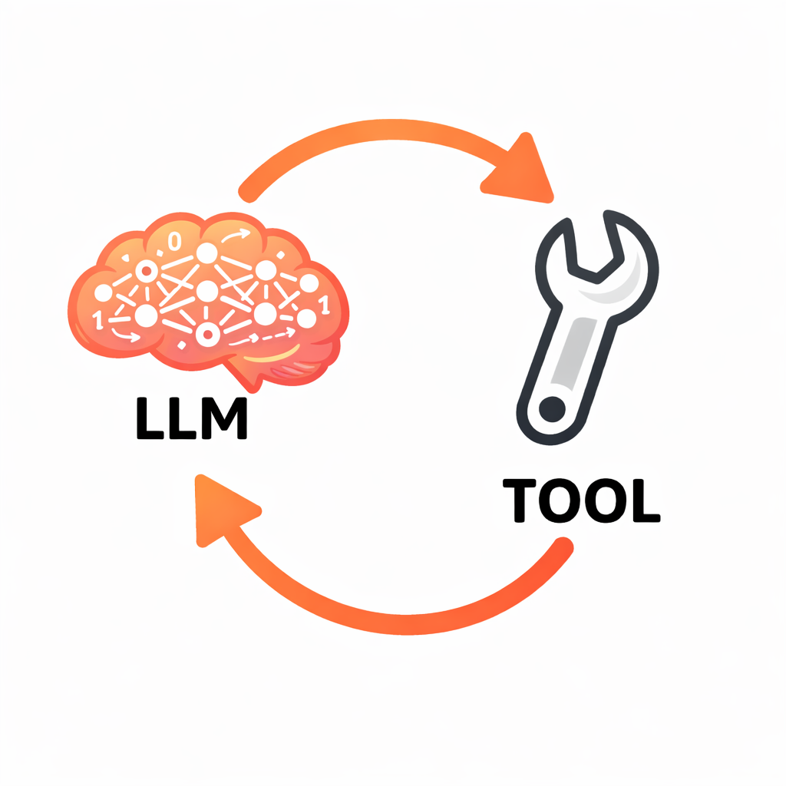

Lectures 2.1 and 2.2 established what large language models are and how they acquire their capabilities. An LLM is a next-token predictor trained on internet text, refined through instruction tuning and RLHF. It can produce remarkably coherent prose, reason about complex problems, and generate working code — but it remains, fundamentally, a text generator. It cannot open a file, send an email, or look up today's weather. This lecture addresses the gap between a language model and an agent, and explains what bridges it.
An LLM, operating on its own, has several hard limitations:
Despite these limitations, an LLM has one capability that makes it extraordinarily useful: it can reason about what action should be taken, express that action in a structured format, and incorporate the results of that action into its ongoing reasoning.
This is the foundation of the entire agent architecture. If the LLM can say "I need to read this file" in a parseable format, and your code can execute that read and return the contents, and the LLM can then reason about those contents — you have an agent. The LLM provides the reasoning. Your code provides the capabilities. Together, they form the agent loop.
The mechanism that bridges text prediction to real-world action is tool calling — a protocol that lets the model express structured requests for actions and receive the results as context.
Tool calling follows a five-step flow:
1. Describe available tools. When you make an API call, you tell the model what tools exist. Each tool has a name, a description, and a schema for its parameters. For example: "read_file takes a filename and returns the contents of that file."
2. The model decides to use a tool. Instead of responding with regular text, the model produces a structured output — typically JSON — encoding a tool call request. For instance:
{
"tool": "read_file",
"arguments": { "filename": "main.py" }
}
This is not free-form text. The model has been specifically trained to produce correctly structured tool requests when it determines that a tool is needed to fulfill the user's request.
3. Your code executes the tool. The LLM never executes anything. Your agent code receives the tool call, validates it, runs the actual operation (reading the file, in this case), and captures the result.
4. Feed the result back. You add the tool result to the conversation as a new message and call the API again. Now the model has the file contents in its context and can reason about them.
5. The model continues. It might respond to the user with a final answer, or it might request another tool call. Perhaps the first file wasn't the right one, or the model learned something that prompted it to read a second file. The loop continues until the model has everything it needs and produces a text response rather than another tool request.
Tool requests are not a special capability distinct from normal text generation. They are simply text tokens that happen to be in a structured format (JSON). The model has been fine-tuned to produce output in this format when tools are available, but the underlying mechanism is the same next-token prediction from Lecture 2.1. There is nothing fundamentally different about a tool call response and a regular text response — one is parseable as a structured request, the other is natural language.
The tool-calling flow maps directly to the perception-reasoning-action loop introduced in Lecture 1.1:

The entire multi-step behavior of an agent — reading files, searching the web, editing code, running tests — emerges from this simple loop. The model never does anything more than predict the next token. But because it can request actions and receive results, that prediction becomes remarkably powerful.
Tool calling gives the model capabilities. The system prompt shapes how and when those capabilities are used.
A system prompt is a message placed at the very beginning of the context that establishes the agent's identity, behavioral guidelines, available tools, and constraints. Every time the agent invokes the LLM, the system prompt is included as part of the input context.
A well-designed system prompt addresses four areas:
Identity and role. Telling the model "You are a coding assistant that helps developers understand and modify their codebase" is not a gimmick. It cues the model to respond the way software developers respond in its training data, rather than the way a project manager or a creative writer might. The role description steers the distribution of likely next tokens.
Available tools and usage guidance. The system prompt describes each tool and provides guidance on when to use it. For example: "Use read_file to examine code before suggesting changes. Always read relevant files before editing." This shapes the model's tool-use decisions.
Behavioral guidelines. Instructions like "Be concise. When you're unsure, say so rather than guessing" counteract default training behaviors. As discussed in Lecture 2.2, instruction tuning tends to reward thoroughness (producing verbose responses) and RLHF tends to reward agreeableness (producing sycophantic responses). The system prompt is the primary lever for overriding these defaults.
Constraints. Rules such as "Never delete files without explicit user confirmation" establish safety boundaries. However, an important caveat: you cannot fully trust the LLM to follow constraints. The model may still request a file deletion despite being told not to. Your agent code is responsible for actually executing (or refusing to execute) tool calls — the system prompt influences the model's behavior, but the agent code enforces the rules.
The system prompt does not modify the model's parameters. It modifies the context — and context is what the model reasons over. This distinction matters because it explains both the power and the limitations of system prompts. They are highly effective at steering behavior, more effective than many developers initially expect, but they cannot guarantee compliance in the way that code-level restrictions can.
The system prompt is part of the context window, which means it competes for space with conversation history and tool results. There is a design tradeoff between detailed system instructions (which consume tokens) and leaving room for the actual conversation and tool outputs.
Assembling everything from Lectures 2.1 through 2.3:
The LLM is a next-token predictor trained on internet text, instruction examples, and human preferences. It is remarkably capable within its training distribution and predictably flawed outside it.
The context window is the finite space where the LLM does all its reasoning. System prompt, conversation history, tool results — everything the model knows comes through this window. The size of the context window is bounded by the model's attention capacity: the ability to attend to all tokens in the input simultaneously.
Tool calling is the protocol that bridges text prediction to real-world interaction. The model requests actions in structured format; your code executes them and feeds the results back.
The system prompt is the primary lever for shaping agent behavior, compensating for training biases, and establishing identity and constraints.
The agent loop is the orchestration layer — your code — that sends context to the model, parses responses, executes tool calls when requested, returns results, and repeats. The model never touches the outside world directly. The agent mediates every interaction.
With this foundation, the theoretical groundwork for the course is complete. The next module moves into practical territory: working with the LLM API directly, understanding tokenization and generation parameters, and beginning to write the code that will eventually become a working agent.